Справочник по Git и GitHub · модуль 2 · первый репозиторий в VS Code
Глава 2.1
Панель Source Control:
первый коммит шаг за шагом
В главе разобран первый коммит: папку открывают в VS Code, заводят в ней репозиторий, создают файл и записывают его в историю. Каждое действие показано кадром панели Source Control с разбором изменений. Кадры сняты на учебном проекте, который создаётся по ходу главы.
- Категория
- Рабочее место
- Уровень
- Начальный
- Что получится
- Проект с двумя коммитами и понимание, из чего состоит панель
- Сколько занимает
- Около двадцати минут за компьютером
§1Что показывает панель и зачем она нужна
Проводник показывает файлы, которые лежат в папке. По нему нельзя узнать, какие файлы изменены после последнего коммита и что войдёт в историю при нажатии Commit. Это показывает панель Source Control: она сравнивает папку проекта с последним коммитом и выводит разницу.
Зачем это нужно в работе
- Перед сохранением видно, что уходит в историю. Панель показывает список изменённых файлов до нажатия кнопки, поэтому случайно закоммитить черновик или чужой файл сложнее.
- Список изменений составляется автоматически. После рабочего дня по нему видно, какие файлы менялись. По этому же списку пишут пояснение к коммиту.
- Лишний файл виден до коммита. Файл с паролем, ключом или большой архив заметен в списке до отправки.
Для работы нужны Git и VS Code, установленные по главе 1.3. Проверка: команда git --version печатает номер версии. Проект главы называется proba-git и состоит из одного файла.
§2Шаг 1. Открыть папку проекта
Git ведёт историю отдельной папки, поэтому сначала папку проекта открывают в VS Code.
Создаём пустую папку proba-git там, где хранятся ваши проекты. В VS Code открываем её: меню File → Open Folder или кнопка Open Folder в проводнике, если в окне ещё не открыта ни одна папка.
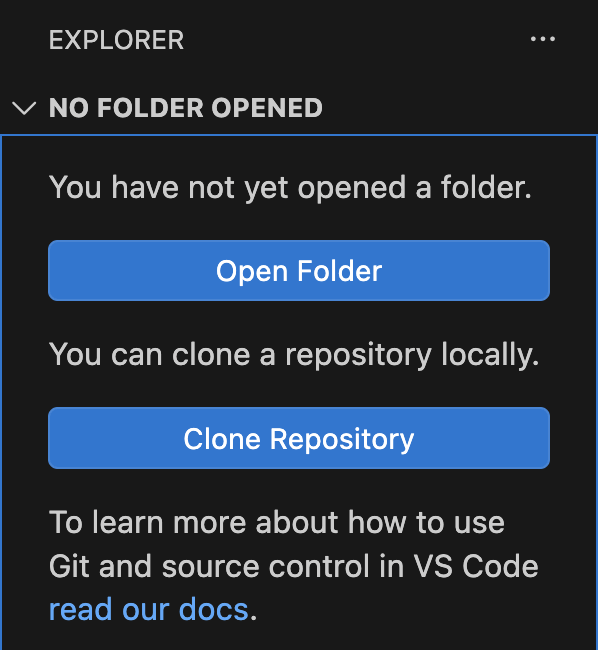
Откроется системное окно выбора папки. Находим в нём proba-git и подтверждаем кнопкой Select FolderOpen. Затем открываем панель Source Control — значком с развилкой на левой полосе или сочетанием CtrlCmd + Shift + G.

Initialize Repository заводит историю на вашем компьютере. Publish to GitHub дополнительно создаёт копию проекта на GitHub. Нажимаем Initialize Repository, публикация разобрана в модуле 4.
Если нажать Initialize Repository в папке Documents или в домашней папке пользователя, Git начнёт отслеживать все файлы в ней: документы, загрузки и настройки. Поэтому открывают папку конкретного проекта.
Что получилось.Папка proba-git открыта в VS Code, панель Source Control предлагает завести в ней репозиторий.
§3Шаг 2. Нажать Initialize Repository
Нажимаем синюю кнопку Initialize Repository. Подтверждать ничего не нужно.
То же в терминале:
git init
На диске появляется скрытая папка .git — в ней Git будет хранить историю проекта. Панель сразу меняет вид:

Одновременно внизу окна, в строке состояния, появляется имя ветки:
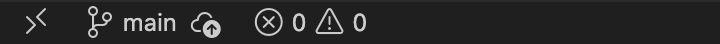
Имя main Git присваивает основной ветке нового репозитория. Ветки разобраны в модуле 3, до него в проекте одна ветка.
Что получилось.В папке заведён репозиторий: в панели поле Message и кнопка Commit, внизу окна имя main.
§4Шаг 3. Создать первый файл
Переходим в проводник VS Code (CtrlCmd + Shift + E). Наводим курсор на строку с именем папки PROBA-GIT — справа появляются значки. Нажимаем первый, New File, и вводим имя privet.html:
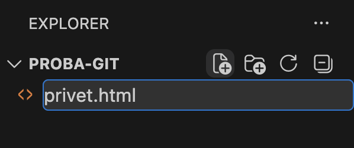
Нажимаем Enter — файл создаётся и открывается в редакторе. Пишем в нём одну строку:
<h1>Привет, это моя страница</h1>
Сохраняем файл (CtrlCmd + S) и открываем панель Source Control.
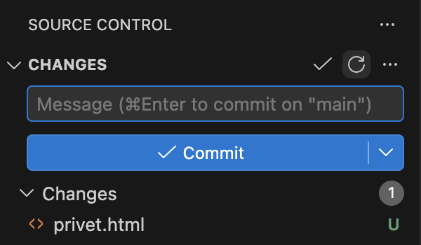
На левой полосе на значке Source Control появился синий кружок с той же единицей:
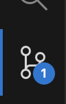
Внизу окна у имени ветки появилась звёздочка. Она означает, что в папке есть изменения, которых нет в истории:
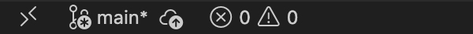
main* — в папке что-то изменилось с последнего коммита.Что получилось.В папке файл privet.html. В панели он с буквой U, у main в строке состояния звёздочка.
§5Шаг 4. Посмотреть, что изменилось
Перед коммитом содержимое файла проверяют.
Нажимаем на имя privet.html в списке Changes. Значки справа от имени на этом шаге не нужны. В области редактора открывается вкладка с файлом.
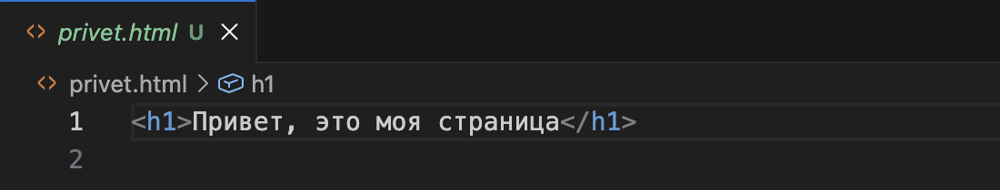
privet.html, рядом с именем — та же буква U, что и в списке. Ниже строка, записанная в файл на шаге 3.Подсветки нет: у нового файла нет прошлой версии, поэтому файл показан целиком.
Шаг ничего не меняет в проекте. Он нужен для проверки перед коммитом: тот ли это файл и нет ли в нём пароля, отладочной строки или чужого текста.
Если файл уже есть в истории, по тому же клику откроется окно сравнения: две колонки, слева прошлая версия, справа текущая, изменённые строки подсвечены. Окно сравнения разобрано на шаге 8.
Что получилось.Видно содержимое нового файла. В проекте при этом ничего не изменилось.
§6Шаг 5. Подготовить файл к коммиту
Наводим курсор на строку файла в списке, не нажимая. Справа от имени появляются три значка. Они относятся к файлу в этой строке.
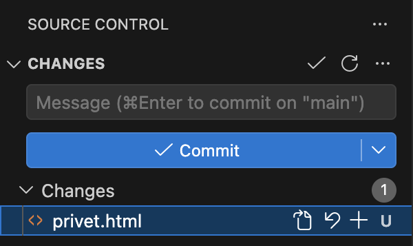
privet.html под курсором. Три значка слева направо, за ними буква состояния U.Что делает каждый из трёх:
| Значок | Подсказка при наведении | Что делает |
|---|---|---|
| Листок со стрелкой | Open File | Открывает файл в редакторе как обычно. Ничего не меняет |
| Круговая стрелка | Discard Changes | Возвращает файл к состоянию последнего коммита: ваши правки стираются |
| Плюс | Stage Changes | Отбирает файл для следующего коммита |
Круговая стрелка, Discard Changes из второй строки таблицы, удаляет правки без возможности восстановления: Git их не сохранял. У нового файла с буквой U она удаляет сам файл, VS Code переносит его в корзину системы (глава 2.6). Её нажимают, только когда правки не нужны.
Нажимаем плюс. Файл переходит в новый раздел:
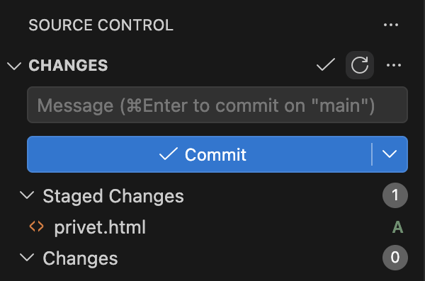
То же в терминале:
git add privet.html
Разница между двумя разделами панели:
- Changes — всё, что изменилось в папке. В коммит это не попадёт.
- Staged Changes — то, что вы отобрали для следующего коммита. Попадёт только это.
Чтобы вернуть файл из индекса, наводим на него курсор в Staged Changes и нажимаем − (Unstage Changes). История при этом не меняется.
Путь одного файла
Сохранение файла в редакторе (CtrlCmd + S) — это только шаг 1, коммит ещё не сделан. Пока не пройдены шаги 3 и 4, вернуться к этой версии нельзя.
Ассоциация: посылка на почте
Для посылки выбирают вещи, складывают их в коробку, заклеивают и подписывают. Остальные вещи остаются дома.
Changes — вещи дома. Плюс у файла кладёт его в коробку (Staged Changes). Поле Message — подпись на коробке. Кнопка Commit заклеивает её: содержимое зафиксировано.
Где не совпадаетПосылка уезжает из дома, а файл остаётся в папке, и его можно править дальше. Коммит сохраняет состояние файла на момент коммита.
Что получилось.privet.html в разделе Staged Changes с буквой A — он войдёт в коммит.
§7Шаг 6. Написать пояснение
Щёлкаем в поле Message над кнопкой и пишем одной строкой, что сделано: «Добавил страницу с приветствием». Сообщения вроде «правки» или «коммит» не сообщают, что изменилось.
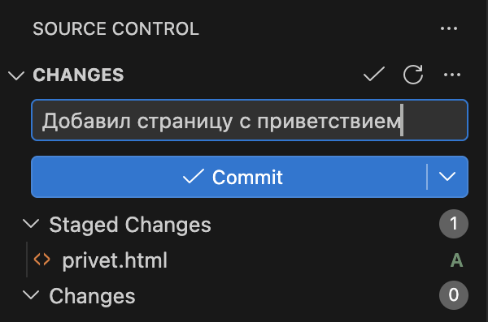
Без пояснения коммит не создаётся: VS Code открывает вкладку COMMIT_EDITMSG и ждёт текст. По пояснениям в истории ищут, когда и зачем менялся файл.
Что получилось.В поле Message пояснение «Добавил страницу с приветствием».
§8Шаг 7. Сделать коммит
Нажимаем ✓ Commit. Состояние проекта записывается в историю.
Панель опустела:
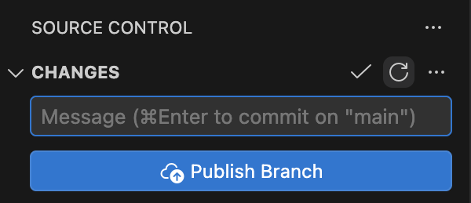
То же в терминале:
git commit -m "Добавил страницу с приветствием"
На месте списка появилась кнопка Publish Branch, она публикует проект на GitHub. Сейчас её не нажимаем, публикация разобрана в модуле 4. Проект хранится только на вашем компьютере.
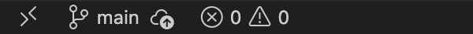
Коммит виден в терминале:
git log --oneline
ceabd0d Добавил страницу с приветствием
Слева короткое имя коммита, справа пояснение. Тот же список показывает раздел Graph под списками файлов.
Что получилось.В истории первый коммит. Список изменений пуст, звёздочка у main исчезла.
§9Шаг 8. Изменить файл ещё раз
Следующая правка вносится в файл, который уже есть в истории.
Открываем privet.html, добавляем вторую строку и сохраняем файл:
<h1>Привет, это моя страница</h1>
<h1>Привет, это моя страница</h1> <p>Учусь работать с Git.</p>
Нажимаем на файл. Открывается окно сравнения с версией из коммита:
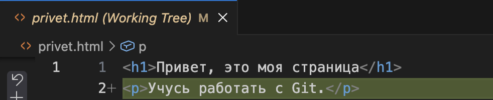
Повторяем шаги 5–7 для этой правки: плюс у файла, пояснение «Добавил строку про учёбу», ✓ Commit. В разделе GRAPH внизу панели теперь два коммита:
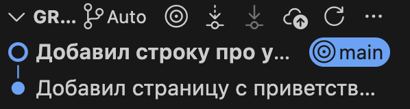
main стоит на последнем.Что должно получиться
main без звёздочки.git log --oneline печатает две строки с вашими пояснениями.privet.html лежит в папке и содержит обе строки.Что получилось.В истории проекта два коммита, папка совпадает с последним из них.
§10Справка: буквы у имён файлов
Буквы U и M встретились в шагах главы. Остальные три встречаются реже. Каждая буква — первая буква английского слова.
| Буква | Значит | Когда появляется |
|---|---|---|
| U — untracked | Новый файл, Git за ним ещё не следит | Создали файл в папке проекта |
| M — modified | Файл был в истории и изменён | Открыли и поправили существующий файл |
| D — deleted | Файл удалён из папки | Удалили файл, который был в прошлом коммите |
| A — added | Новый файл уже подготовлен к коммиту | Нажали плюс у файла с буквой U |
| R — renamed | Файл переименован | Сменили имя файла, содержимое осталось прежним |
При переименовании панель сначала показывает два изменения: удалённый старый файл (D) и новый файл (U). После отбора Git сравнивает содержимое и, если оно совпадает, показывает переименование.
§11Справка: счётчик, строка состояния, меню
Синий кружок на значке Source Control — сколько файлов изменилось с последнего коммита. Ноль означает, что папка совпадает с историей.
Строка состояния внизу окна. Слева имя текущей ветки и значок обмена с сервером. Три состояния, которые встречаются чаще всего:
| Что видно | Что это значит |
|---|---|
main и значок облака | Всё сохранено в историю, копии на GitHub у проекта нет |
main* | В папке есть изменения, которых нет в истории: коммит не сделан |
main ⟳ 3↓ 2↑ | Проект связан с GitHub: два ваших коммита не отправлены, три чужих не забраны |
Третье состояние появится в модуле 4, когда проект окажется на сайте. На стрелки смотрят перед началом работы: сначала забирают чужие коммиты, потом делают свои. Так реже приходится разбирать слияния.
Меню с остальными командами находится под значком с тремя точками справа от слова CHANGES. Там собраны все команды Git, которые понадобятся дальше.
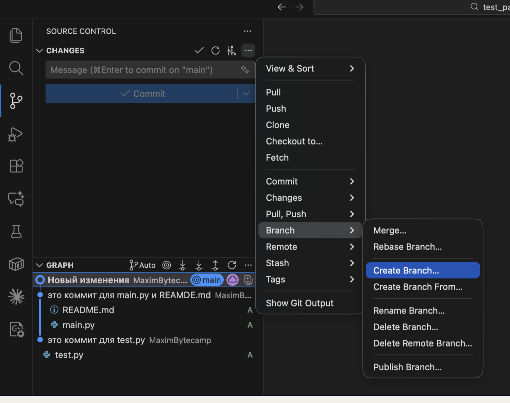
| Пункт меню | Что делает | В какой главе |
|---|---|---|
Pull, Push, Fetch | Обмен коммитами с копией на GitHub | Модуль 4 |
Clone | Скачать чужой репозиторий себе | Глава 2.2 |
Commit → Undo Last Commit | Отменить последний коммит, вернув файлы в подготовленные | Глава 2.6 |
Changes → Stage All | Подготовить все изменения разом | Глава 2.3 |
Branch | Создать, переключить, переименовать, удалить ветку | Модуль 3 |
Stash | Отложить незаконченные правки, не делая коммит | Глава 3.5 |
Команды, которых нет среди кнопок панели, находятся в этом меню или в палитре команд (CtrlCmd + Shift + P) по слову git.
§12Частые вопросы
§13Проверьте себя
На значке Source Control стоит цифра 4. Что это означает?
Четыре файла в папке проекта отличаются от последнего коммита: изменены, созданы или удалены.
Чем Changes отличается от Staged Changes?
Changes — изменения в папке, не отобранные в коммит. Staged Changes — изменения, отобранные плюсом; при нажатии Commit сохраняются только они. Разделение позволяет записать в коммит часть правок.
Рядом с файлом стоит буква U. Что это за файл и что с ним делать?
Файл новый: он лежит в папке, но в истории его ещё нет. Чтобы он попал в проект, нажмите плюс — буква сменится на A, файл окажется в Staged Changes, — и сделайте коммит. Если файл попал в папку случайно, его можно удалить или внести в .gitignore.
Почему при первом клике по новому файлу открылся сам файл без окна сравнения?
У нового файла нет прошлой версии. Окно сравнения открывается у файлов, которые уже есть в истории, как на шаге 8.
Вы сделали коммит, но на GitHub изменений не видно. Почему?
Коммит сохраняется на вашем компьютере. Чтобы он оказался на сайте, нужна отправка: кнопка Sync Changes или пункт Push в меню. Пока проект не опубликован, в строке состояния стоит значок облака.
Что произойдёт, если нажать круговую стрелку у изменённого файла?
Файл вернётся к состоянию последнего коммита, а все правки после него исчезнут без возможности вернуть. Git их не сохранял, поэтому восстанавливать нечего. Если правки ещё понадобятся, перед отменой их сохраняют коммитом.
§14Шпаргалка по главе
открыть папку
Initialize Repository
создать файл → плюс
пояснение → Commit
CtrlCmd+Shift+G
значок с развилкой слева
Changes — изменилось в папке
Staged Changes — войдёт в коммит
U — новый файл
M — изменён
D — удалён
A — подготовлен
плюс — подготовить
минус — вернуть из подготовленных
круговая стрелка — отменить правки
main — текущая ветка
main* — есть несохранённое
облако — проект не опубликован
Итог главы
Шаги главы составляют основной порядок работы с Git: открыть папку, завести репозиторий, создать файл, посмотреть изменения, отобрать их плюсом, написать пояснение, нажать Commit. Панель показывает разницу между папкой проекта и последним коммитом: изменённые файлы попадают в Changes, отобранные — в Staged Changes, и в историю уходит только второй список. Буква справа от имени показывает, что случилось с файлом, счётчик на значке — сколько файлов разошлось с историей, строка состояния — на какой вы ветке и опубликован ли проект. В следующей главе разобраны два способа получить репозиторий: завести его в своей папке и клонировать готовый.
- Кадры сняты в Visual Studio Code на проекте
proba-git, собранном специально для этой главы: в нём один файл и два коммита. - Назначение элементов панели и список команд меню — документация VS Code, раздел Source Control.
- Буквы состояний файлов соответствуют выводу
git status— документация Git.